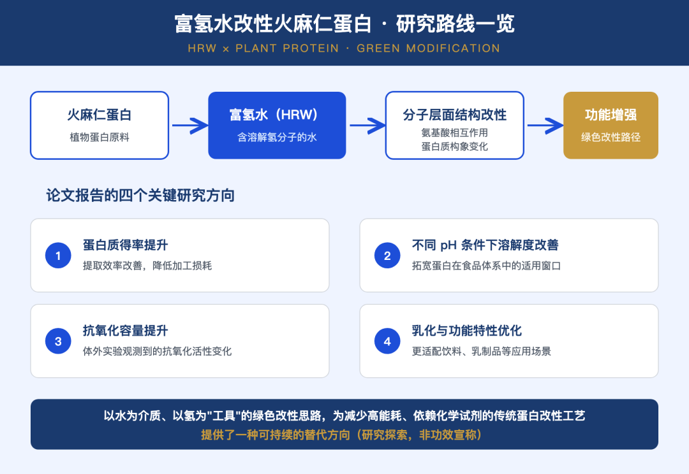
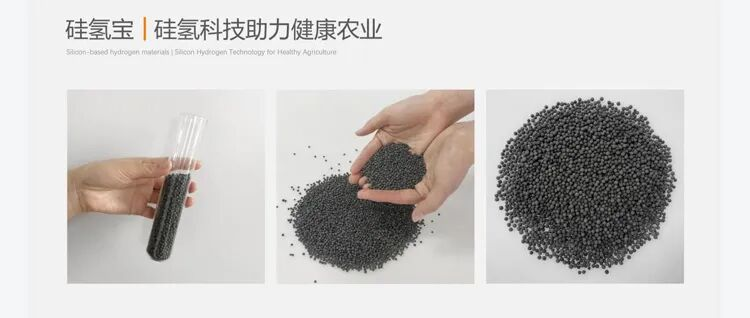

一、这篇研究在做什么？
最近我刷到一则来自土耳其研究团队的动态：他们与合作者完成的研究发表于 International Journal of Biological Macromolecules（影响因子 8.5），主题是——用富氢水（Hydrogen-Rich Water, HRW）对火麻仁蛋白进行"绿色改性"。
看完之后我的第一反应是：氢的应用叙事，正在从"消费品"悄悄走向"工业原料与工艺"。这篇论文就是一个很好的样本，今天把它翻译、拆解给大家。
论文的两位作者是 Fahriye Seyma Özcan 与 Muhammed Allam Elnasanelkasim，研究方向属于食品科学与蛋白质工程的交叉领域。火麻仁（Hemp Seed）蛋白是一种备受关注的植物蛋白来源，但和大多数植物蛋白一样，它在溶解性、乳化性、加工适应性上存在天然短板，传统上需要通过酸碱、化学试剂或高能耗工艺来改性。
这篇论文的做法很"反常规"：不引入化学改性剂，而是用富氢水作为改性介质，在温和条件下实现蛋白质的结构修饰与功能增强。

图 1 — 论文视觉摘要（图片来源：作者团队在 LinkedIn 发布的论文宣传图，版权归原作团队所有，仅作学术介绍引用）
二、富氢水扮演了什么角色？
按照论文的表述，富氢水（HRW）的作用机制发生在分子层面：
- 氨基酸相互作用的变化：氢分子环境影响了蛋白链上氨基酸残基之间的相互作用方式；
- 蛋白质构象改变：蛋白的空间结构发生调整，进而带来功能性质的改善。
用一句通俗的话概括：富氢水在这里不是"被喝的水"，而是材料科学家手里的一把"温和的分子级工具"。
这一点我认为非常有信号价值——氢的价值锚点，正在从"健康消费"这一条腿，逐步扩展出"绿色制造"这另一条腿。

图 2 — 机制示意（来源：依据论文报道机制重绘）
三、论文报告的四个关键发现是什么？
研究团队在论文摘要与宣传材料中列出的主要结果包括：
- 蛋白质得率提升——提取效率改善；
- 不同 pH 条件下溶解度增强——适用窗口变宽；
- 抗氧化容量提升——体外实验观测到的活性变化；
- 乳化性与功能特性优化——更适配饮料、乳制品等食品体系。
需要强调：以上均为实验室研究结论，属于公开科研文献的探索性成果，不涉及任何消费产品的功效宣称。

图 3 — 论文四大关键发现示意（据论文内容整理）
四、为什么这篇论文值得关注？
从产业视角看，我认为有三个层次的意义：
三个 B2B 信号
- 绿色改性是真需求。传统蛋白改性依赖化学试剂与高能耗工艺，环保与成本压力越来越大。富氢水提供了一条以水为介质、以氢为工具的替代思路，且论文明确指出这条路径"减少了对能源密集型、化学基工艺的依赖"。
- 氢的应用图谱在扩展。过去几年我们聊氢，场景多集中在富氢水杯、敷贴等消费品；而食品工业原料改性、农业材料等 B 端场景正在进入学术与产业视野。作为做固态氢材料的人，我看到的是：氢的供给方式（固态缓释、现场制氢水）与需求场景（食品、农业、材料）之间，正在出现新的接口。
- 发表载体的分量。International Journal of Biological Macromolecules 是生物大分子领域的老牌期刊，IF 8.5 说明这条路线已经具备了学术共同体的严肃关注，而非营销概念的空转。
五、几句冷静的话
本研究是探索性科研工作，富氢水在蛋白质改性中的作用机制、可重复性与规模化路径，仍需更多研究验证。本文是对公开科研文献的介绍与解读，不构成功效宣称，相关内容以论文原文与官方资料为准。
我们关注它，是因为它提示了一个方向：氢材料的应用边界，比想象中更宽。
延伸：木齐在氢农业与氢食品上的探索
顺带一提，木齐自己在这条路上也走了几年：我们自研的硅氢宝（硅氢生物陶瓷材料），遇水可长时间缓释氢气，并同步释放硅等矿物质元素，已在土壤改良、食用菌栽培、水稻育苗等场景开展应用验证，并获国家发明专利授权。如果你在农业渠道、种植基地或农资行业，欢迎找我聊聊。
图 4 — 硅氢宝：硅氢材料助力健康农业（木齐科技产品实拍）
FAQ — 富氢水在食品与健康工业中的应用
面向 B2B 品牌方、原料采购方与研发负责人的直接答疑。
Q：富氢水为什么能改善植物蛋白溶解性？
A：溶解的氢分子（H₂）在温和、非热条件下与蛋白质侧链和二硫键发生作用，松开紧密折叠结构并暴露出更多功能基团。结果是在更宽 pH 范围内溶解性提升，恰好击中了植物蛋白配方师的第一大痛点。
Q：富氢水与碱性电解水是同一种水吗？
A：不是。碱性电解水以 pH 为核心指标（通过电解获得），而富氢水以溶解氢浓度和负 ORP 为核心定义。两者只在部分商用机型上重叠，并非同一规范。
Q：工业上如何生产富氢水？
A：主要有 3 种工业路线：(a) 电解法、(b) 镁基反应法、(c) 固态富氢缓释材料法（这是木齐科技的核心技术方向）。三条路线在成本、能耗与杂质特征上各有不同。
Q：富氢水改性蛋白涉及任何健康功效宣称吗？
A：不涉及。火麻仁蛋白研究关注的是加工性能，不是健康结果。处理后的蛋白是工业性能更好的功能性原料，而非治疗性产品。
Q：固态富氢发生器能直接接入食品加工产线吗？
A：可以。固态富氢材料（如木齐富氢陶瓷球）目前正在食品与发酵工厂的试点中以"零电力、低维护"方式实现在线富氢水制备。
Q：该技术是否已具备规模化生产条件？
A：目前已具备小试与共工程化（co-engineering）条件。食品、农业、发酵等多个行业的 B2B 客户已进入实质性评估阶段。
参考资料：Özcan, F. S. & Elnasanelkasim, M. A., Green transformation of hemp seed protein: structural modification and functional enhancement with hydrogen-rich water, International Journal of Biological Macromolecules。
本文为前沿研究解读，内容基于公开科研文献与作者团队公开发布的资料整理，仅供参考，不构成任何功效宣称或投资建议；相关表述以论文原文为准。